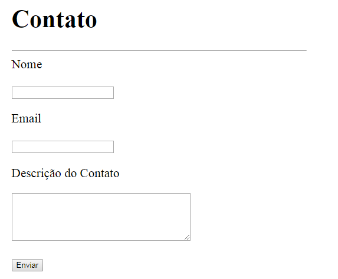

Introdução
Você já parou para pensar se as suas aplicações WEB tem algum tipo de sergurança contra ataques de usuários mal-intencionados. Se você não sabe por onde começar, já entraremos no assunto, e você protegerá suas aplicações contra as diversas vulnerabilidades que um aplicação pode ter.
Saiba de antemão que nada é 100% seguro na WEB, mas não se desespere, faça o máximo e estude de diversas fontes como se proteger.
As aplicações WEB, diferentemente de uma aplicação desktop pode ter uma visita inesperada que bagunça a casa e vai embora. Basicamente, as aplicações WEB precisam fortemente da implementação de meios combatentes de vulnerabilidades.
Conforme introduzido, você conhece a primeira vulnerabilidade que seu Website pode não estar preparado para enfrentar.
XSS
Antes de comerçamos a falar sobre XSS ou também conhecido como CROSS-SITE-SCRIPTING, vou te fazer uma pergunta. Sua aplicação possui algum formulário de contato? Quem sabe talvez forumlário de cadastro? Responda. Ela tem não é mesmo?
Se você possui um formulário de cadastros que depois de cadastrar os dados exibe ele em outro lugar, servirá de exemplo. Contudo, você não precisa construir um para realizar o teste.
Colocorei links relativo aos temas abordados mas em relação aos exemplos desse exposto sobre segurança, será realizado na linguagem PHP.
Voltando ao assunto XSS, vou te mostrar um comando JavaScript, linguagem muito utlizado no mundo WEB que você pode se deparar algum dia.
Veja abaixo esse simples formulário de contato:

Agora, o que aconteceria se alguém digitasse o seguinte comando e enviasse o formulário: <script>alert("XSS HACKED");</script>
Você pode baixar esse exemplo para utilização: https://github.com/viniciusmouraesilva/xss_ataque
Ao realizar o cadastro do contato, algo pode ter aparecido na sua tela confirmando a vulnerabilidade ao XSS dessa aplicação.
Mas como isso aconteceu você deve estar se perguntando. Simplesmente por que você enviou um comando JavaScript(alert que exibe um pop up na tela) e ao cadastrar o contato e exibi-ló, o HTML interpretou como um comando JavaScript, mas também, executou mostrando em sua tela. Ainda parace um pouco confuso mas, o detalhe é que o JavaScript funciona do lado do cliente. Eu quero dizer que ao enviar o código JavaScript e ser cadastrado no banco em prol de exibir depois; executa o código JavaScript de alerta.
Aperte o direito do mouse e seleciona a opção exibir código fonte da página e procure pelo local onde é exibido o código de alerta do JavaScript.
Realmente, foi executado algo que você poderia não estar esperando e no mais simples exemplo você teria essa mensagem carregada a cada atualização da sua página. Algo relacionado seria a utilização de códigos JavaScript que redirecionasse o usuário através da vulnerabilidade desse formulário para uma página falsa do atacante.
Parece que temos problemas e é hora de resolvê-los. O ideal para se proteger é filtrar a entrada e de preferência a sáida de todos os dados que entrão em sua aplicação.
Em PHP pode se encontrar diversas funcionalidades para filtrar dados. Cada uma com um determinado próposito e para combater o XSS vamos primeiro falar sobre a função htmlentities().
Alerta
Antes de falar sobre a função htmlentities. Você precisa entender o que são entidades em HTML. Nada mais nada menos do que caracteres reservados do HTML. Por exemplo: se você quiser colocar na sua página HTML o seguinte sinal < de menor, você não digita através do seu teclado diretamente, e sim, em forma de entidade que o HTML vai interpretar. Como assim em forma de entidade? Veja o que eu escrevi através da imagem abaixo para que aparecesse o sinal de menor nessa página HTML:
Foi escrito < para que aparecesse o sinal de menor.
Para saber mais sobre entidades HTML visite https://www.w3schools.com/html/html_entities.asp
Mas afinal o que isso tem haver? Você se lembra do comando JavaScript que exibe o pop up na tela? Não. Sem problemas, vamos relembrar que a tag de <script> do JavaScript continha sinal de menor e maior para ser escrita. Então, é onde utilizamos a função htmlentities do PHP.
O que ela faz é converter, caso seja enviado, caracteres que possam ser convertidos em entidades HTML. E nessa histório toda, se alguém te enviasse aquele comando JavaScript, seria convertida os sinas de maior e menor para entidades HTML e não seria executado o pop up na tela. Pois, agora são entidades do HTML e não representação para comandos JavaScript.
Agora um exemplo de código PHP que filtra a saída dos dados com htmlentities e não exibe mais o pop up do JavaScript em nosso formulário de contato.
<?php foreach($contatos as $contato): ?>
<tr>
<td><?php echo htmlentities($contato["nome"]); ?></td>
<td><?php echo htmlentities($contato["email"]); ?></td>
<td><?php echo htmlentities($contato["mensagem"]); ?></td>
</tr>
<?php endforeach; ?>
No código acima, ao exibir os meus contatos em uma tabela eu validei a saída respectivamente de nome, email e mensagem com o htmlentities que nesse caso evita a execução de códigos JavaScript na saída dos dados.
O contato é cadastro e o pop up não é exibido mais após o cadastro do contato.
Você também pode validar a saída enquanto o usuário preence o formulário para não exibir códigos JavaScript, caso tenha um erro de preencimento no formulário. Claro que um usuário bem intencionado não vai digitar códigos JavaScript mas, lembre-se, não confie nos usuários
<form method="POST">
<label>Nome
<p><input type="text" name="nome"
value="<?php echo htmlentities($nome); ?>"></p>
</label>
<label>Email
<p><input type="text" name="email"
value="<?php echo htmlentities($email); ?>"></p>
</label>
<label><p>Descrição do Contato</p>
<textarea name="mensagem" cols="40" rows="5">
<?php echo htmlentities($mensagem); ?></textarea>
</label>
<p><input type="submit" value="Enviar"></p>
</form>
Como o assunto de filtrar a saída fica batido alguma das vezes, resolvi colocar ele em primeira instância e depois validar a entrada dos dados.
Conforme validado a saída, vamos validar a entrada contra XSS. O que faremos é filtrar os dados ao serem enviados, só que, agora utilizaremos outra função do PHP para resolução do mesmo.
SQL Injection
SQL injection, um ataque bem popular a sites na internet, se não, o mais popular. Comandos SQL que você utiliza para escrever, alterar, excluir os dados dentro de formulários que podem ou não estar vulneráveis.
Se uma aplicação estiver vulnerável ao SQL injection, um comando como '); drop table usuarios; -- causaria problemas. No singelo exemplo, supondo que exista uma tabela usuários, ela seria excluída (da para assustar, não é mesmo?).
Uma das formas de se proteger é utilizar de prepared statements, declarações preparadas, que reserva espaços para cada dado que será apresentado para o comando SQL. Se você programa na linguagem PHP, pesquise por PDO, uma forma de acesso aos dados com abstração, exemplo, utilizando as mesmas funções para acessar os dados independente do banco de dados.